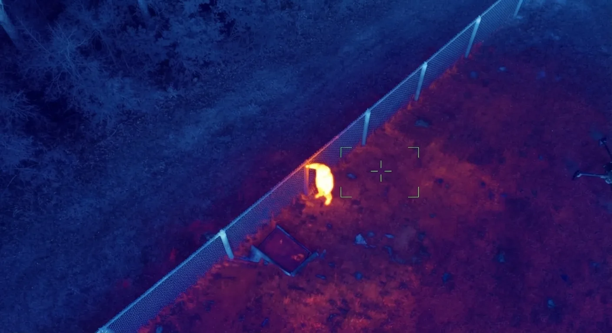
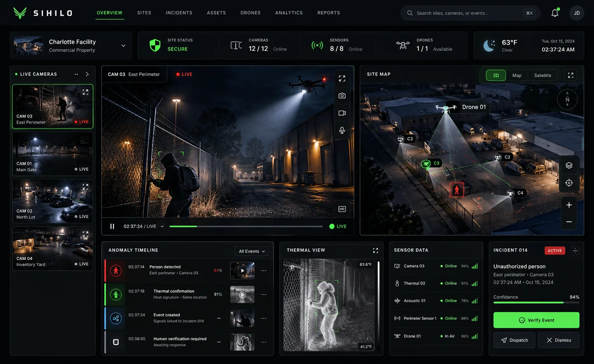
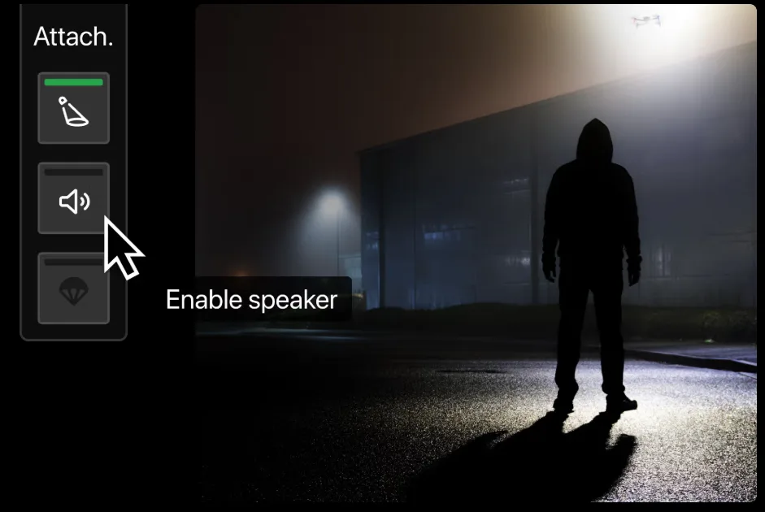

Start with a site assessment
Tell us about your property, existing cameras and security concerns. Together, we can identify a practical pilot scope.
Physical security intelligence · Charlotte, NC
Continuous security intelligence
for high-value property.
Sihilo is being built to connect cameras, sensors, thermal imaging and aerial verification into one intelligence layer. Detect unusual activity. Understand the context. Bring a human in when it matters.
Designed for dealerships, construction sites, equipment yards and industrial properties.
Early-stage platform · Charlotte-area pilot partners wanted
01 / Close the gaps
A patrol can observe your property while it's there. Between visits, cameras record, alarms trigger, and separate systems leave people to piece together what happened. The gap is context.
Designed to help security teams focus their attention. Monitoring coverage and response procedures are defined for each pilot.
02 / How Sihilo works
Our proposed pilot workflow connects observation to human judgment. The sensors, detection rules and escalation plan are scoped around your property.


Observe Understand Verify Respond
Start with compatible existing cameras and appropriate site sensors. Identify where additional viewpoints would close a coverage gap.
Develop local computer vision and sensor fusion to interpret movement, sound, thermal signatures and other available signals together.
Gather context from available cameras and sensors. Aerial verification adds a mobile viewpoint when site conditions, configuration and operating authorization allow.
Surface meaningful events to a designated operator or customer with the context to decide what happens next, under an agreed response plan.
Drone operations are deployed in accordance with applicable FAA operating requirements and site-specific authorizations.
03 / The intelligence layer
Your property has thousands of signals. Sihilo is designed to turn them into one picture. The architecture is hardware-flexible: a drone is one mobile sensor within a broader system.


Tell us about your property, existing cameras and security concerns. Together, we can identify a practical pilot scope.
Camera compatibility, local processing, event review and sensor options must be assessed and agreed for each site. No universal camera integration is promised.
Broader thermal, acoustic, RF/network and access-system fusion; aerial workflows; site memory and spatial intelligence. Listed inputs are design targets, not confirmed integrations.
Already have cameras? Start there. An assessment determines what can be reused, what needs an adapter and where new hardware may be needed.
Interface concept
A camera sees movement. Thermal adds context. The proposed dashboard brings those signals together for human review.
Illustrative interface — no live customer data. All events, sensor states and confidence values below are examples.

The interface is a design preview. It does not connect to cameras, detect events or dispatch a response.
Sihilo Air / roadmap
Some blind spots need a mobile viewpoint. Sihilo Air is our planned approach to bringing aerial verification into the same workflow as cameras and site sensors.
Hardware selection, operator responsibilities and flight authorization are defined for each site. Aerial operations are not currently offered as a deployed Sihilo service.
Discuss Your Site’s Coverage

Context before action
An aerial viewpoint can help an operator understand an event before deciding how to respond. A spotlight or speaker can add a visible or audible warning where the site plan allows.
Aerial deterrence is a planned workflow. Hardware, operator controls and response procedures are defined for each pilot.
Sihilo develops the intelligence layer, not the aircraft. Imagery does not indicate hardware ownership, a confirmed integration or a hardware partnership.
Sihilo Edge / product concept
Your property shouldn't need to stream every second of every camera to the cloud just to understand what's happening.
The local-first design places computer vision on an edge device at your property, with important events and metadata surfaced through a dashboard.
The aim: lower latency, less bandwidth and storage use, greater privacy, and more customer control over sensitive footage.
Hardware and connectivity requirements depend on the pilot. Fully offline operation is not currently offered or promised.
Sihilo Site Memory / roadmap
A useful record should make important events easier to find. Site Memory is planned to distinguish incidents from repetitive background footage, according to your retention policy.
Retain high-quality recent footage within the configured storage window.
Index relevant clips and preserve them at high quality under your incident retention policy.
Compress or lower storage priority as permitted by customer policy.
Retain searchable event records for the agreed period, with access controls.
Planned policy options, subject to storage capacity and pilot scope.
“What happened near Gate 3 last Tuesday night?” “Show every after-hours vehicle event this month.” “When was this equipment last observed?”
These are design goals. Natural-language video search and equipment tracking are roadmap concepts, not available product features.

Our operating principle
The owl is the operating principle: see in darkness, listen, understand the environment and move when something needs attention.
Design around complementary sensors and the actual conditions on your site.
Gather context so the person reviewing an event has a clearer picture.
Support operators with useful information and an agreed response plan.
Designed around your property
Initial pilot focus: commercial properties in Charlotte, NC and the surrounding area.

Valuable vehicles, large outdoor inventories, multiple access points and long overnight periods.

Changing layouts, materials, equipment and temporary perimeters make static security difficult.

High-value machinery and vehicles spread across outdoor areas, often beyond a single camera's view.

Large footprints, loading areas, gates and after-hours activity create more signals than a person can watch at once.
Property photographs illustrate site types; they are not Sihilo customer locations.
Privacy by design
Define what needs watching, who can access it and how long to keep it. Those decisions belong in the site plan from the start.
These controls are design requirements under development. Availability and configuration must be confirmed before any pilot deployment.
Sihilo 90-day pilot
Pilot partners wanted in Charlotte. We're selecting a small number of commercial properties to help shape early deployments. Start with a site assessment and a clear, agreed scope.
Potential measures include monitoring hours, events detected and reviewed, false-positive rate, verification and response time, coverage gaps and operational observations. Metrics and reporting depend on the agreed deployment.
Pilot timing, capability, responsibilities and commercial terms are agreed after assessment. Applying does not commit you to a deployment.
Development roadmap / not a release commitment
Our direction stays focused on commercial security. These phases describe planned development, not capabilities already deployed.
R&D concept. Periodic aerial or site scans could create a navigable spatial record. Future versions could compare captures over time to help an operator understand how the site changes.
Progress records, material movement and equipment location context.
Lot configuration, inventory location context and perimeter visualization.
Equipment placement, blocked routes, spatial changes and incident reconstruction.
Technical exploration includes Gaussian splatting for digital site reconstruction. Automated change detection and accuracy remain unvalidated; no production capability is claimed.

Start with the blind spots
Let’s map the gaps in your property’s coverage and define a practical first step.
Request a Site AssessmentRequest a Site Assessment
Tell us what you need to protect, what you already use and where you see gaps. We can discuss fit for a site assessment or a 90-day pilot.
Prefer email? moisesjdelcastillo@gmail.com